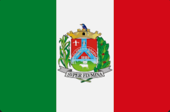

Paraibuna - Geodex

Município de Paraibuna
-
Populacão: 18.302 pessoas
-
Área: 809,576km²
-
Fundação: 1° de Março de 1833
-
Distância da Capital: 123km
Paraibuna é uma cidade localizada no estado de São Paulo, no Brasil. Com uma história rica e diversificada, a cidade se desenvolveu a partir da ocupação dos bandeirantes no século XVII. Fundada oficialmente em 1º de março de 1833, Paraibuna teve seu crescimento impulsionado pela construção da Estrada de Ferro Central do Brasil no século XIX, o que favoreceu o comércio e o desenvolvimento da região. A cidade possui um patrimônio histórico e cultural significativo, incluindo igrejas antigas, praças e casarões preservados, que contam parte da sua história. Atualmente, Paraibuna se destaca pela beleza natural, com cachoeiras, trilhas e reservas ecológicas que atraem turistas e amantes da natureza.